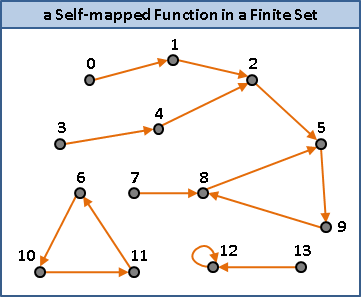
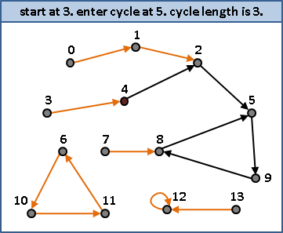

Cycle Finding
程度★ 難度★
Self-mapped Function in a Finite Set
每一點恰有一條出路。此時從任何一點開始，不斷往前走，最後必定循環。證明省略。
給定一個出發起點，請找到循環起點、循環長度。
應用
一、檢查一條singly linked list是否因接錯而造成無限循環，並找出接錯位置。 二、檢查兩條獨立的singly linked list是否因接錯而牽連作伙，並找出接錯位置。 三、一條陣列緊密放著n+1個數，數值皆介於1到n， 其中恰有兩數相同，請找出此數及此數位置。 四、兩整數相除得到之無限小數，請找出其循環節。 五、餘數次方，請找出循環長度。 六、檢查自動機是否有無窮迴圈。
一個簡單的演算法（Memoization）
開一條陣列，紀錄各個元素是否拜訪過了。當遇到拜訪過的元素，就是循環起點。
這個方法既簡單又快，不過缺點就是記憶體用很兇。時間複雜度為O(N)，空間複雜度為O(N)，N為集合大小。
UVa 202 275 517 11549 12442 11607
Cycle Finding: Floyd's Algorithm（Tortoise and Hare Algorithm）
程度★ 難度★★
龜兔賽跑演算法
以龜兔兩個變數就能找到循環，相當節省記憶體。
一、尋找循環長度的倍數：
龜兔從起點同時出發，龜走一步、兔就走兩步。由於兔比龜快，當龜兔皆進入循環之中，兔必然領先數圈、從後方追上龜。
當龜兔相遇，龜兔的行走距離差，即是循環長度的倍數。因為龜一倍速、兔兩倍速，所以龜兔的行走距離差，剛好是龜的行進距離。龜的行進距離即是循環長度的倍數。
二、尋找循環起點：
龜退回起點，兔原地待命，龜兔同時出發，龜走一步、兔走一步。龜兔相遇之處即是循環起點。
三、尋找循環長度：
從循環之中任意一處出發，一次走一步，繞一圈回到原處，即得循環長度。
時間複雜度
最佳情況是：當龜進入循環，正好龜兔相遇。
最差情況是：當龜進入循環，此時兔恰好在龜前方一步之距，兔得再繞兩圈才能追上龜。
令μ是出發起點到循環起點的距離，λ是循環長度。龜最多走μ + λ步，兔最多走2μ + 2λ步，時間複雜度為3μ + 3λ = O(μ + λ)。
UVa 350 11053
Cycle Finding: Brent's Algorithm
程度★ 難度★★
演算法
一、尋找循環長度：
龜兔位於起點，龜保持不動，兔一步一步走。如果龜位於循環之中，那麼兔便可從後方追上龜，測量出循環長度。概念跟Floyd's Algorithm完全相同。
因為不知道龜是否位於循環之中，龜必須不時移動到兔的當前位置，讓龜有機會進入循環之中、讓兔有機會從後方追上龜。此處採用倍增法，每當兔走1步、續走2步、續走4步、……，龜會瞬間出現在兔的當前位置。
最差情況是出發起點與循環起點相距很遠，龜在進入循環前一刻，兔將多繞許多圈。然而多繞的步數其實小於等於μ（以倍增法推導），又由於龜不必移動，因而效率較佳。
二、尋找循環起點：
龜兔退回出發點。兔先走循環長度步，之後就跟Floyd's Algorithm完全相同。
由於兔額外移動，因而效率較差。